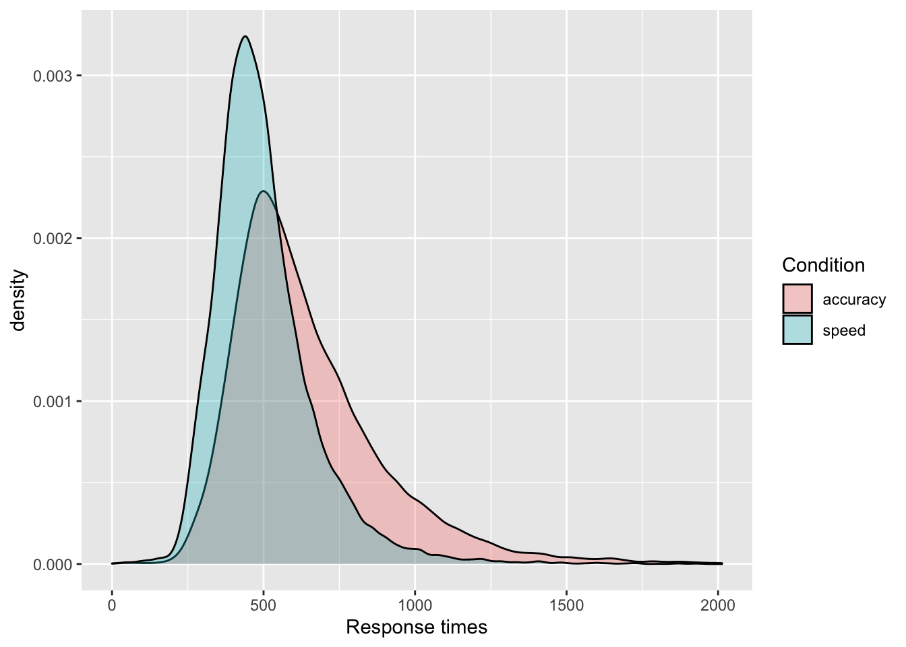
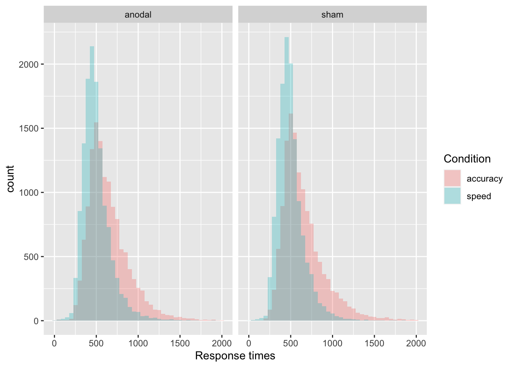
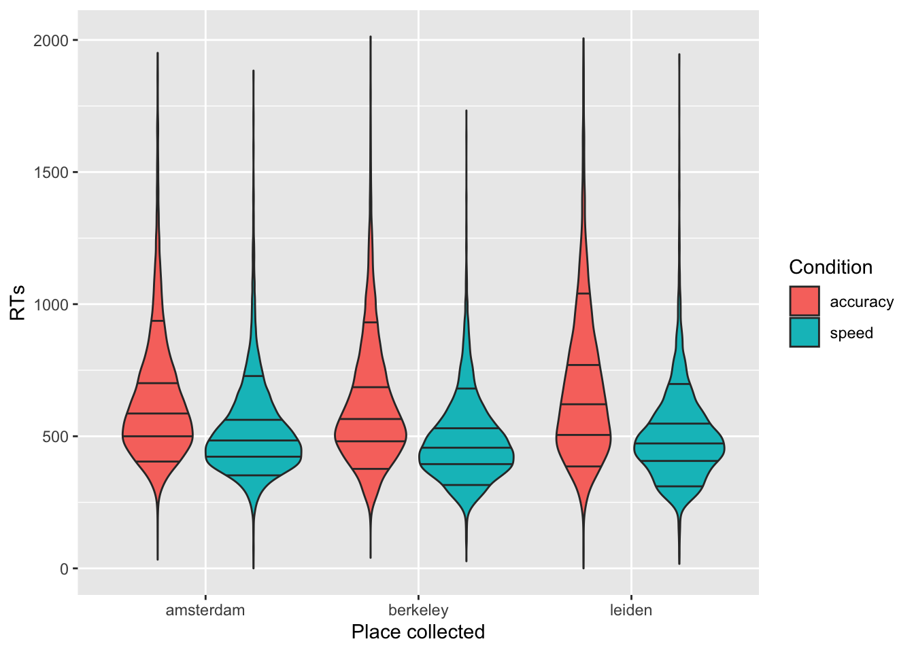
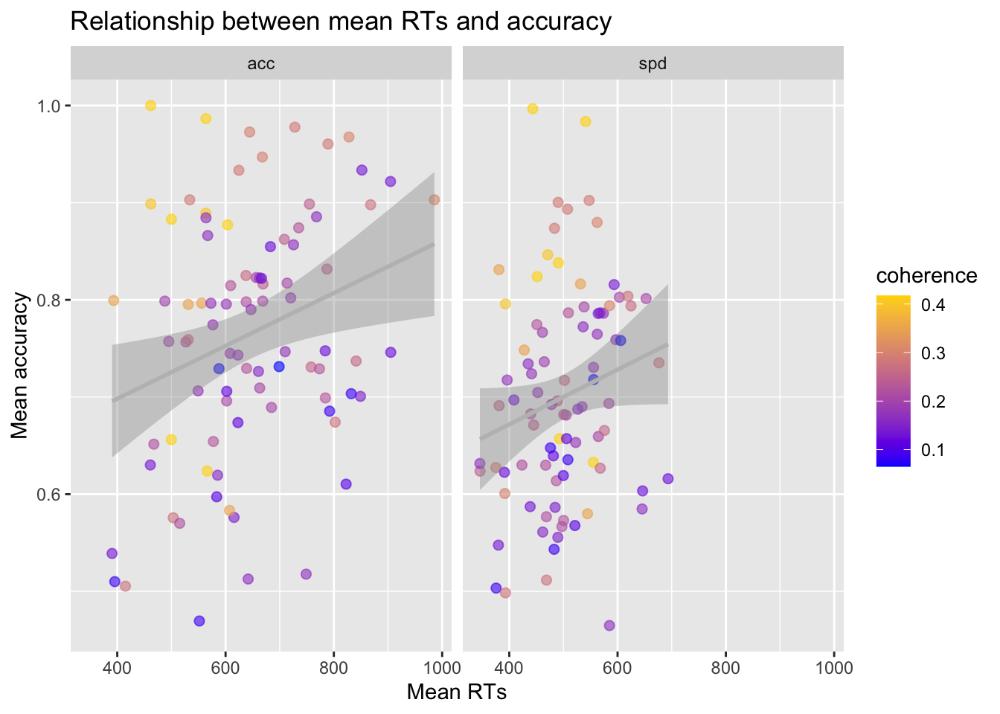
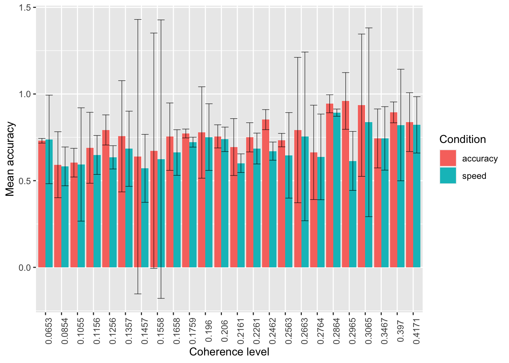
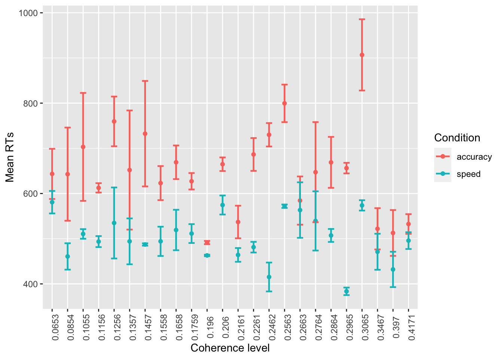

First, download the tdcs.csv datasets from the data folder on Github and load them in R.
library(tidyverse)
tdcs_data = read_csv('https://raw.githubusercontent.com/laurafontanesi/r-seminar22/master/data/tdcs.csv')##
## ── Column specification ─────────────────────────────────────────────────────────────────────────────────────────────────
## cols(
## RT = col_double(),
## acc_spd = col_character(),
## accuracy = col_double(),
## angle = col_double(),
## block = col_double(),
## coherence = col_double(),
## dataset = col_character(),
## id = col_character(),
## left_right = col_double(),
## subj_idx = col_double(),
## tdcs = col_character(),
## trial_NR = col_double()
## )glimpse(tdcs_data)## Rows: 52,800
## Columns: 12
## $ RT <dbl> 799, 613, 627, 1280, 800, 760, 719, 799, 520, 1066, 480, 627, 467, 560, 867, 733, 759, 600, 706, 653…
## $ acc_spd <chr> "spd", "spd", "spd", "acc", "spd", "acc", "acc", "spd", "spd", "acc", "spd", "spd", "spd", "spd", "a…
## $ accuracy <dbl> 1, 1, 1, 0, 1, 1, 0, 0, 1, 1, 1, 1, 1, 0, 1, 1, 1, 1, 1, 1, 1, 1, 1, 1, 1, 0, 1, 0, 1, 1, 1, 1, 1, 1…
## $ angle <dbl> 180, 180, 180, 180, 180, 180, 180, 180, 180, 180, 180, 180, 180, 180, 180, 180, 180, 180, 180, 180, …
## $ block <dbl> 1, 1, 1, 1, 1, 1, 1, 1, 1, 1, 1, 1, 1, 1, 1, 1, 1, 1, 1, 1, 1, 1, 1, 1, 1, 1, 1, 1, 1, 1, 1, 1, 1, 1…
## $ coherence <dbl> 0.4171, 0.4171, 0.4171, 0.4171, 0.4171, 0.4171, 0.4171, 0.4171, 0.4171, 0.4171, 0.4171, 0.4171, 0.41…
## $ dataset <chr> "berkeley", "berkeley", "berkeley", "berkeley", "berkeley", "berkeley", "berkeley", "berkeley", "ber…
## $ id <chr> "S1.1", "S1.1", "S1.1", "S1.1", "S1.1", "S1.1", "S1.1", "S1.1", "S1.1", "S1.1", "S1.1", "S1.1", "S1.…
## $ left_right <dbl> 2, 2, 1, 1, 2, 2, 1, 1, 1, 1, 2, 2, 2, 1, 2, 1, 1, 2, 2, 1, 2, 2, 1, 1, 1, 1, 2, 2, 2, 1, 2, 1, 1, 2…
## $ subj_idx <dbl> 1, 1, 1, 1, 1, 1, 1, 1, 1, 1, 1, 1, 1, 1, 1, 1, 1, 1, 1, 1, 1, 1, 1, 1, 1, 1, 1, 1, 1, 1, 1, 1, 1, 1…
## $ tdcs <chr> "sham", "sham", "sham", "sham", "sham", "sham", "sham", "sham", "sham", "sham", "sham", "sham", "sha…
## $ trial_NR <dbl> 1, 2, 3, 4, 5, 6, 7, 8, 9, 10, 11, 12, 13, 14, 15, 16, 17, 18, 19, 20, 21, 22, 23, 24, 25, 26, 27, 2…Task A
RT) with a density plot, separately by the accuracy vs. speed conditions (acc_spd) using different colors of the density plots per condition. Be sure to adjust the transparency so that they are both clearly visible and put appropriate axes labels and legend title.ggplot(data = tdcs_data, mapping = aes(x = RT, fill = acc_spd)) +
geom_density(alpha = .3) +
labs(x = 'Response times', fill = 'Condition') +
scale_fill_discrete(labels = c("accuracy", "speed"))
RT) with a histogram, separately by the accuracy vs. speed conditions (acc_spd) using different colors of the density plots per condition. Be sure to adjust the transparency and binwidth, so that they are clearly visible and put appropriate axes labels and legend title. This time, split it furtherly by TDCS manipulation (tdcs) using facet_grid().ggplot(data = tdcs_data, mapping = aes(x = RT, fill = acc_spd)) +
geom_histogram(binwidth=50, alpha = .3, position="identity") +
labs(x = 'Response times', fill = 'Condition') +
facet_grid( ~ tdcs) +
scale_fill_discrete(labels = c("accuracy", "speed"))
RT) with a violinplot, separately by the place the data were collected (dataset). Split further by accuracy vs. speed conditions using colors. Add the 10%, 30%, 50%, 70%, and 90% quantiles, that are the most common in response times data analyses. Change labels appropriately.ggplot(data = tdcs_data, mapping = aes(x = dataset, y = RT, fill = acc_spd)) +
geom_violin(draw_quantiles = c(0.1, 0.3, 0.5, 0.7, 0.9)) +
labs(x = "Place collected", y='RTs') +
scale_fill_discrete(name="Condition", labels = c("accuracy", "speed"))
Task B
Now, I am creating a summary of the data, where we look at mean response times and accuracy per subject, separately by coherence (how difficult the task was) and the speed vs. accuracy manipulation:
summary_tdcs_data = summarise(group_by(tdcs_data, id, coherence, acc_spd),
mean_RT=mean(RT),
mean_accuracy=mean(accuracy))## `summarise()` has grouped output by 'id', 'coherence'. You can override using the `.groups` argument.glimpse(summary_tdcs_data)## Rows: 176
## Columns: 5
## Groups: id, coherence [88]
## $ id <chr> "A10.1", "A10.1", "A10.2", "A10.2", "A11.1", "A11.1", "A11.2", "A11.2", "A12.1", "A12.1", "A12.2"…
## $ coherence <dbl> 0.4171, 0.4171, 0.4171, 0.4171, 0.4171, 0.4171, 0.4171, 0.4171, 0.1658, 0.1658, 0.1658, 0.1658, 0…
## $ acc_spd <chr> "acc", "spd", "acc", "spd", "acc", "spd", "acc", "spd", "acc", "spd", "acc", "spd", "acc", "spd",…
## $ mean_RT <dbl> 566.1254, 555.3443, 499.8281, 492.7937, 603.8807, 490.6762, 499.9799, 451.5980, 748.8424, 645.387…
## $ mean_accuracy <dbl> 0.6237288, 0.6327869, 0.6561404, 0.6571429, 0.8771930, 0.8380952, 0.8829431, 0.8239203, 0.5176849…Using the summarized data:
Plot the relationship between mean response times (mean_RT) and mean accuracy (mean_accuracy) using a scatterplot.
Use facet_grid to split the plot based on the speed vs. accuracy manipulation (acc_spd).
Add the regression lines.
Change with appropriate plot titles and x- and y-axes labels.
Add the coherence levels as color of the dots. Because coherence is a continuous variable and not categorical, you can use scale_colour_gradient to adjust the gradient.
Change the color of the regression lines to grey.
ggplot(data = summary_tdcs_data, mapping = aes(x = mean_RT, y = mean_accuracy, color = coherence)) +
geom_point(alpha = 0.6, size= 2) +
geom_smooth(method = lm, color='grey') +
labs(x='Mean RTs', y='Mean accuracy') +
ggtitle("Relationship between mean RTs and accuracy") +
scale_colour_gradient(low = "blue", high = "gold", limits=range(summary_tdcs_data[,'coherence'])) +
facet_grid( ~ acc_spd)## `geom_smooth()` using formula 'y ~ x'
Task C
Using the summarized data:
Plot the mean mean_accuracy, separately by factor(coherence) using stat_summary with arguments geom="bar" and position = 'dodge'. Split further based on the accuracy vs. speed manipulation (acc_spd) with different colors.
Now add error bars representing confidence intervals and using stat_summary again with arguments width=.9, position = 'dodge'. Adjust the width argument if the error bars are not centered in each of the bars.
ggplot(data = summary_tdcs_data, mapping = aes(x = factor(coherence), y = mean_accuracy, fill=acc_spd)) +
# stat_summary with arg "fun":
# A function that returns a single number, in this case the mean worry_cont for each level of cause_recoded:
stat_summary(fun = "mean", geom="bar", position = 'dodge') +
# mean_cl_normal( ) is intended for use with stat_summary. It calculates
# sample mean and lower and upper Gaussian confidence limits based on the
# t-distribution
stat_summary(fun.data = mean_cl_normal, geom = "errorbar", size=.2, width=.9, position = 'dodge') +
labs(x = 'Coherence level', y = 'Mean accuracy', fill='Condition') +
# to change the orientation of the x-ticks labels:
theme(axis.text.x = element_text(angle = 90)) +
# fix labels in legend
scale_fill_discrete(labels = c("accuracy", "speed"))
ggplot(data = summary_tdcs_data, mapping = aes(x = factor(coherence), y = mean_RT, color=acc_spd)) +
# stat_summary with arg "fun":
# A function that returns a single number, in this case the mean worry_cont for each level of cause_recoded:
stat_summary(fun = "mean", geom="point") +
stat_summary(fun.data = mean_se, geom = "errorbar", size=.8, width=.4) +
labs(x = 'Coherence level', y = 'Mean RTs', color='Condition') +
# to change the orientation of the x-ticks labels:
theme(axis.text.x = element_text(angle = 90)) +
# fix labels in legend
scale_color_discrete(labels = c("accuracy", "speed"))
Note that you do not need the position = 'dodge' here anymore, and that you might have to adjust size and width of the error bars.